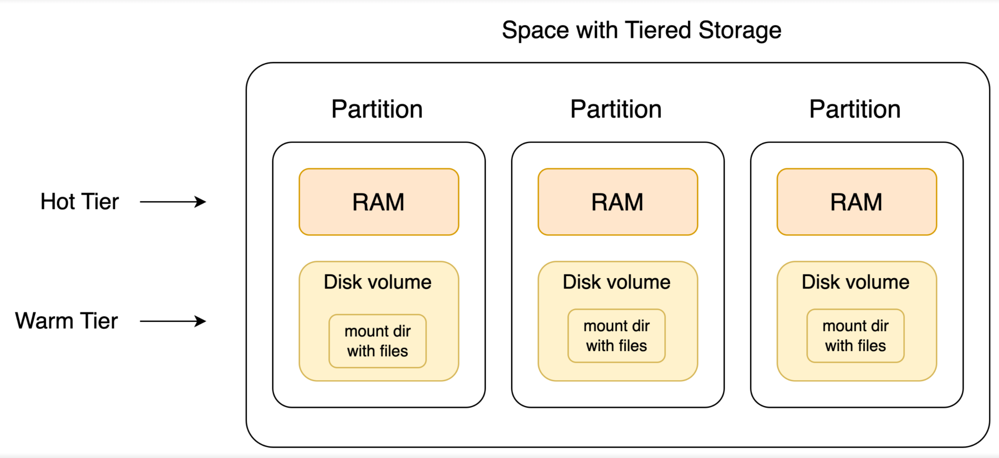
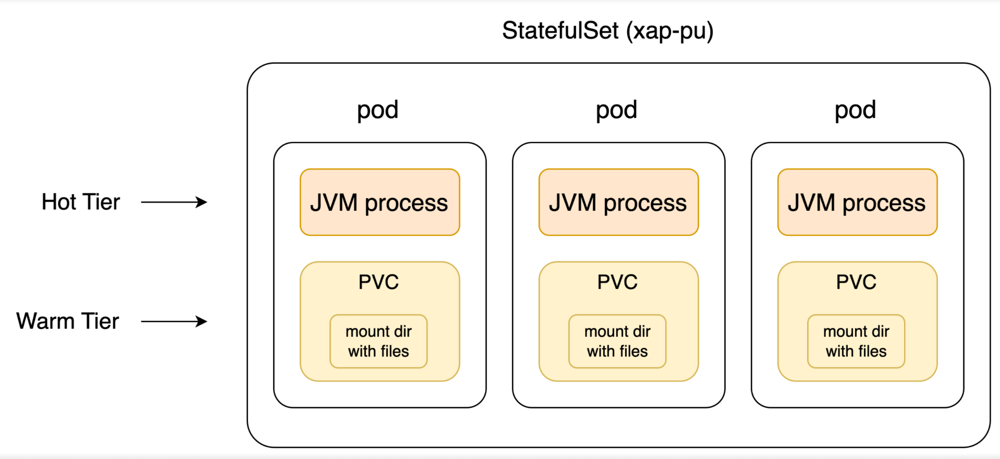
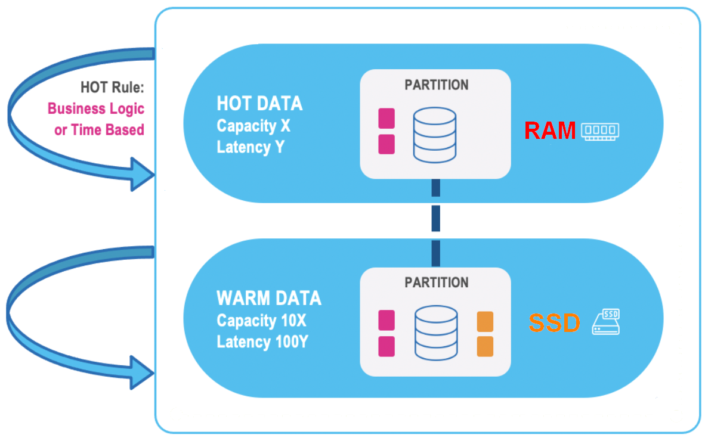

Tiered Storage provides seamless tiering of data between different storage tiers, to balance performance and storage media costs.
The goal of Tiered Storage is to offer a cost-effective solution for storing large amounts of data while balancing cost with read/write performance. Data is divided into two logical layers or 'tiers'. By abstracting the complexity of tiered storage management, developers can focus on building and optimizing their applications without concern for the specifics of data placement and performance tuning.
Data can be stored in two tiers. By strategically dividing data between these two tiers, Tiered Storage optimizes both performance and cost, ensuring that critical data operations are executed efficiently while maintaining overall storage expenses at a manageable level.
| Tier | Storage Location | Details |
|---|---|---|
| Hot | RAM |
This tier is designed for high-speed access. It stores data that should be accessed fast according to business requirement ensuring low latency and high throughput for read operations. |
| Warm | Disk | This tier is intended for data that is accessed less frequently. While it offers slower access times compared to the Hot Tier, it provides a more cost-effective storage solution for large volumes of data. |
Hot Tier — RAM: Priority data, used for read/write operations and analysis requiring fastest access
Warm Tier — SSD (recommended media): Additional data used mostly for read-only, analytical purposes
Typically, the Warm Tier contains all the data, while the Hot Tier holds a subset based on user-defined rules. The Warm Tier also acts as the persistence layer for all data. The distribution of data across these tiers is handled based on predefined rules and is seamless to client applications. Applications access data in both tiers via standard APIs, without needing to be aware of the tiered structure.
Data Distribution: The system transparently manages the placement of data between the Hot and Warm Tiers based on predefined rules. This ensures that the most critical data is readily accessible in the Hot Tier, while the full dataset remains stored in the Warm Tier.
Seamless Integration: Client applications interact with the data storage system using standard APIs. This abstraction means that applications do not need to be aware of the underlying tiered storage architecture. Whether data resides in RAM or on disk, the access and manipulation of data remain consistent and straightforward from the application's perspective.
In Tiered Storage, space data partitioning adheres to the standard methodology. Space objects and documents are routed to partitions based on the routing key property value. Partitions not only manage data in RAM but also on disk volumes. Consequently, within a Space partition, an object can reside in RAM, on disk, or in both locations. This dual-layered storage approach ensures efficient data management and access within each partition.

Tiered Storage implementation in Kubernetes involves managing disk volumes using standard resources:
StorageClass: A cluster-level resource abstracting the storage provisioner in a given environment. This resource must be created by an administrator before deploying a space with Tiered Storage.
StatefulSet: Represents a space, ensuring a fixed relation between space partition pods and disk volumes. Created by running the space helm install command.
PersistentVolumeClaim (PVC): Represents a disk volume attached to a partition. PVCs (one per space partition) are created automatically by the space helm install command.

Using Tiered Storage can increase effective data capacity by a factor of ten.

In order to get the most out of Tiered Storage, please note the following:
By analyzing the query criteria, if it is definitely seen that all data is in the Hot layer, only the cache will be queried.
If max entries for the read is specified and there are max entries in cache that meets the query condition, only cache will be queried. If there is no limit, the query will go to the disk.
Using read API - ReadModifier : MEMORY_ONLY_SEARCH
When running using jdbc init the connection with properties. add readModifiers property with MEMORY_ONLY_SEARCH value.
Using the above modifier the number of objects in cache/total are revealed via the API.
The metrics are reported by
According to the query criteria versus the Hot tier criteria, queries use the Hot tier only if all of the required data is present in the Hot tier. You can modify the read modifier to allow memory search only or the number of objects to read can be limited and they can be found in the Hot tier.
Tiered Storage supports primitive property types, and Java Timestamp and Instant classes .
Warm storage is not automatically persistent. Persistence is established via the standard
Primitive property types and selected Java classes are supported in Tiered Storage. See Tiered Storage Data Types for a complete list of supported data types.
For tables configured as Tiered Storage, if no rules are defined for the table, its data will be stored in the Warm tier only.
For Service Grid SLA, the Processing Unit must specify the instance level SLA with host requirement for each instance or alternatively, specify pu.autogenerated-instance-sla=true as a context property of the deployment. This will allow the system to automatically generate the SLA .
For Service Grid, each instance is bound to a specific machine for the entire duration of the deployment. Redeployment is only possible with the same schema, unless delete was called.
In order to improve recovery time from tiered storage space, counters initialization occurs in async mode, allowing the space to be ready before filling up statistics.
Aggregations are pushed into tier when no cache rule on type and no transactions or parameter to ignore transaction are set. Custom aggregation should implement the relevant SQLight query.
See: https://docs.gigaspaces.com/latest/solution-hub/aggregators-custom.html
Reads are pushed down based on the cache rule, query condition and read modifier, evaluating if required info is in cache or must be retrieved from tier.
Clear is pushed to tier in certain conditions:
Direct invocation of “clear” method of sqlite without processing in gigaspace engine
Works both in Gigaspaces API and JDBC
If there are no conditions, then the “Drop and recreate” table approach is used.
If there is a condition, if it is not indexed -> protective exception/warning
Conditions for using pushdown instead of read & clear one by one:
No cache rule
No replication target
No notify template for delete on this type, or ignore notification flag is set
No active transaction on related objects, or ignore flag for transaction is set
Space is not HA
No Space filter related to clear, or ignore filter flag for clear is set
engine.TieredStorage.ClearTablePushdown.ignoreNotifyTemplates engine.TieredStorage.ClearTablePushdown.ignoreActiveTransaction engine.TieredStorage.ClearTablePushdown.ignoreFilter (default true)
engine.TieredStorage.ClearTablePushdown.chunkSize (default 1000) engine.TieredStorage.ClearTablePushdown.chunkSize.min (default 5 - validation for chunksize)
engine.TieredStorage.ClearTablePushdown.chunkSize.max (default 50k -validation for chunksize)
To get the most out of Tiered Storage, keep the following query routing behaviors, configuration options, and monitoring features in mind.
A query automatically targets only the Hot tier (avoiding disk reads) under the following conditions:
Complete Criteria Match: Analysis determines that 100% of the requested data resides within the Hot tier.
Sufficient Cached Entries: A maximum entry limit (max entries) is specified, and the Hot tier already contains enough matching entries to satisfy it.
If no limit is specified, or if the Hot Tier cannot guarantee all matching data is present, the query will search the disk.
If you want to force queries to search only the Hot tier (in-memory) regardless of where the rest of the data resides, use the MEMORY_ONLY_SEARCH modifier:
Read API: Set the read modifier to ReadModifier.MEMORY_ONLY_SEARCH.
JDBC Connection: Add the ReadModifiers property during connection initialization:
See: https://docs.gigaspaces.com/latest/admin/metrics-bundled.html - TieredStorage section
Primitive property types, date types, and array of primitives are supported in Tiered Storage.
In order to improve recovery time from tiered storage, counters initialization occurs in async mode, allowing the space to be ready before filling up statistics.
In certain scenarios, pushing operations directly to the storage tier significantly improves performance. Instead of loading large database tables into memory, executing operations, and writing back to the database, operations run directly on the storage tier without consuming memory resources.
Direct tier operations bypass related Space filters, notifications, transactions, and lease expirations.
Aggregations are pushed down to the storage tier when:
No cache rules are defined on the type.
No active transactions exist (or parameters are configured to ignore active transactions).
Custom aggregations must implement the corresponding SQLite query.
Documentation: GigaSpaces Custom Aggregators
The clear operation is pushed to the tier by directly invoking SQLite's clear method, bypassing processing in the GigaSpaces engine. This behavior applies to both the GigaSpaces API and JDBC interfaces.
Unconditional Clear: If no conditions are specified, a "Drop and Recreate Table" approach is used.
Conditional Clear: If conditions are provided but the targeted field is not indexed, a protective exception/warning is raised.
To use pushdown instead of reading and clearing entries one by one, all of the following conditions must be met:
No active cache rules.
No replication targets configured.
No notify template for delete on this type (or the ignore notification flag is set).
No active transactions on related objects (or the ignore transaction flag is set).
Space is not configured for High Availability (HA).
No Space filter related to clear is active (or the ignore filter flag for clear is set).
| Configuration Property | Default Value / Info |
|---|---|
|
engine.TieredStorage.ClearTablePushdown.ignoreNotifyTemplates |
Enables ignoring notify templates |
|
engine.TieredStorage.ClearTablePushdown.ignoreActiveTransaction |
Enables ignoring active transactions |
|
engine.TieredStorage.ClearTablePushdown.ignoreFilter |
true |
|
engine.TieredStorage.ClearTablePushdown.chunkSize |
1000 |
|
engine.TieredStorage.ClearTablePushdown.chunkSize.min |
5 (Validation minimum) |
|
engine.TieredStorage.ClearTablePushdown.chunkSize.max |
50k (Validation maximum) |
For details of how to deploy Tiered Storage in a Kubernetes environment, refer to Intelligent Tiering Details for Kubernetes
For details of how to deploy Tiered Storage in a Service Grid environment, refer to Intelligent Tiering Details for Service Grid